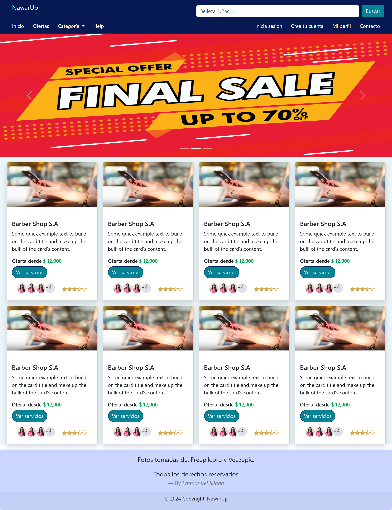
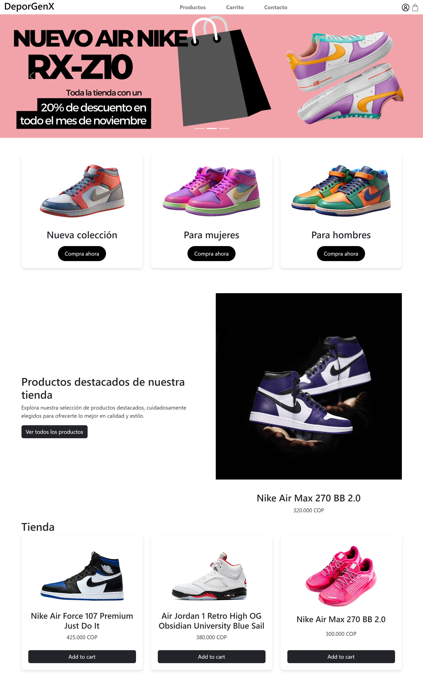

<section class="section-projects">
  <div>
    <h1 id="projects">Proyectos</h1>
    <hr>
    <br>
    <br>
    <div class="container-cards">
      <mat-card class="card">
        <mat-card-header class="header-card">

          <mat-card-title>NawarUp</mat-card-title>
          <mat-card-subtitle>Aplicación Web</mat-card-subtitle>
        </mat-card-header>
        
        <mat-card-content class="content-card">
          <p>
            Estoy trabajando en el diseño y creación de una aplicación web que busca que emprendedores del ámbito de la
            belleza ofrezcan sus servicios y faciliten el agendamiento de citas.
          </p>
        
          <span>Rol:</span> Desarrollador front-end y back-end.<br>
          <span>Tecnologías utilizadas: </span> Angular 16, Bootstrap y Spring Boot 3.
        </mat-card-content>
        <mat-card-actions>
          <a mat-button>Código frontend</a>
          <a mat-button>Código backend</a>
        </mat-card-actions>
      </mat-card>
      <!--card2-->

      <mat-card class="card">
        <mat-card-header class="header-card">

          <mat-card-title>E-commerce BioBugs</mat-card-title>
          <mat-card-subtitle>Sitio Web</mat-card-subtitle>
        </mat-card-header>
        
        <mat-card-content class="content-card">
          <p>
            Participé de forma exitosa, junto con compañeros desarrolladores, en la creación y diseño de un e-commerce
            de ventas de insectos para combatir plagas en los cultivos.
          </p>
          <span>Rol: </span> Desarrollador front-end.<br>
          <span>Tecnologías utilizadas: </span> Bootstrap, JavaScript, HTML y CSS.
        </mat-card-content>
        <mat-card-actions>
          <a mat-button>Github</a>
        </mat-card-actions>
      </mat-card>

      <!--card3-->

      <mat-card class="card">
        <mat-card-header class="header-card">
          <mat-card-title>E-commerce DeporGenX</mat-card-title>
          <mat-card-subtitle>Landing page</mat-card-subtitle>
        </mat-card-header>
        
        <mat-card-content class="content-card">
          <p>
            Contribuí en la creación de una landing page para un e-commerce de artículos deportivos.
          </p><br><br>
          <span>Rol: </span> Desarrollador front-end.<br>
          <span>Tecnologías utilizadas: </span> JavaScript, HTML y CSS.
        </mat-card-content>
        <mat-card-actions>
          <a mat-button>Github frontend</a>
          <a mat-button>Github backend</a>
        </mat-card-actions>
      </mat-card>

    </div>
  </div>
</section>